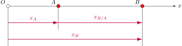

A particle that moves along a straight line is in rectilinear motion. The line can have any orientation in space (left-right, up-down, or be at some arbitrary angle).
The goal of this section is to completely describe a particle's motion. That is, we wish to find the particle's position, velocity and acceleration at any time. For example, a problem might provide position as a function of time and we ask to solve for it's velocity and acceleration. A different problem might supply particle's acceleration, and ask us to determine the velocity and position.
We are interested in describing the motion of a particle moving along a straight line. To define its position we choose an origin and make a choice for which direction we will call positive.
In the figure below we have chose the positive direction to be to the right and have placed the origin at point \(O\). We can now say that point \(P\) is at the location \(x=+3~\text{m}\) and point \(P^\prime\) is at the location \(x=-2~\text{m}\)

If the position of the particle is known at every time, we say that the motion of the particle is known.
\begin{align*} \text{Average velocity}=\frac{\Delta x}{\Delta t} \end{align*} \begin{align*} \text{Instantaneous velocity}=v=\lim_{\Delta t\to0}\frac{\Delta x}{\Delta t} \end{align*}For this type of straight-line motion \(a(t)=0\) for all values of time. The velocity is therefore a constant for all time:
\begin{align*} \frac{dx}{dt}=v=\textrm{constant} \end{align*} To find the position, we integrate the above expression \begin{align*} \frac{dx}{dt}=v\\ dx=v\,dt \\ \int_{x_0}^x dx=v\int_{0}^t dt\\ x(t) = x_0+vt \end{align*}Define \begin{align*} x_{B/A}=x_B-x_A \end{align*} 